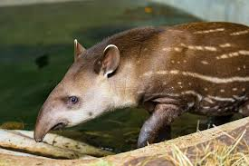

Jaguar
 Unlike other big cats, Jaguars do not avoid water. They are actually alright at swimming. Their scientific name is Panthera Onca. It weighs 100 to 250lbs (45.3592kg to 113.398kg) and it's current population trend is decreasing.
Unlike other big cats, Jaguars do not avoid water. They are actually alright at swimming. Their scientific name is Panthera Onca. It weighs 100 to 250lbs (45.3592kg to 113.398kg) and it's current population trend is decreasing.
Jaguars are South America's biggest big cats.They once lived from the southern tip of Argentina to the border of Mexico and the U.S.A.. Most Jaguars are now found in the Amazon basin.
Tapir

The tapir, a relative to the rhinoceros, are up to 250 kg in weight and up to 2m in length. In size, it is relative to a donkey. They have splayed toes, 4 on each front foot and 3 on each back foot, which help them balance on the soggy ground.
Baby tapirs have white stripes down their back with light brown fur to help blend into the forest floor. These marks on their fur will fade as the tapir matures.
Most tapirs live in South America: from southern Mexico to Venezuela, Brazil and Paraguay.
Capybara
 Capybaras are actually enormous rodents. At adulthood they are about 4 feet long and 140 pounds in weight and females are larger than males. They have a cylindrical body and wiry fur. As they are herbivores, they only eat plants at a rate of about 8 pounds a day.
Capybaras are actually enormous rodents. At adulthood they are about 4 feet long and 140 pounds in weight and females are larger than males. They have a cylindrical body and wiry fur. As they are herbivores, they only eat plants at a rate of about 8 pounds a day.
They have lots of predators in the wild, encluding:
- Jaguars
- Anacondas
- Caimans
- and Harpy eagles.
They live in large groups, 10-30 in each one. In the dry season, that figure could reach 100 in each group!.
Anaconda
 Anacondas are semiaquatic snakes found in the South America.
The largest recorded size of an anaconda is 30ft (9m!) but they usually grow about 15ft(4.5m) for females and 9ft (2.7m) for males. There have also been reports of anacondas about 100ft but the snakes have never been recorded scientifically. Anacondas are thicker than other boas, with narrow but large heads. They also have a thick black stripe running from their eye to their jaw. Anacondas' size and color depends on their species: the largest species, the green anacondas, are of course green and the other species color ranges from brown to yellow.
Anacondas are semiaquatic snakes found in the South America.
The largest recorded size of an anaconda is 30ft (9m!) but they usually grow about 15ft(4.5m) for females and 9ft (2.7m) for males. There have also been reports of anacondas about 100ft but the snakes have never been recorded scientifically. Anacondas are thicker than other boas, with narrow but large heads. They also have a thick black stripe running from their eye to their jaw. Anacondas' size and color depends on their species: the largest species, the green anacondas, are of course green and the other species color ranges from brown to yellow.
Every species of anaconda live in South America, with their ideal habitat swamps and rainforests.